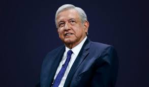

Biografia de
Andrés Manuel López Obrador
Nació el 13 de noviembre de 1953 en Villa de Tepetitán, Macuspana, Tabasco, estado del sudeste mexicano.
El mayor de los siete hijos de Andrés Manuel López Román y Manuela Obrador González, hija de un español originario de Santander y exiliado en México por la guerra civil española,
José Obrador Revueltas, quien se radicara en el puerto de Veracruz, donde conoció a su esposa Gertrudis González.
Licenciado en Ciencias Políticas y Administración Pública por la Universidad Nacional Autónoma de México. En el año 1976 da comienzo a su carrera política cuando apoya la candidatura del poeta Carlos Pellicer para Senador por el Estado.
Desde que entró en las filas del Partido Revolucionario Institucional (PRI) en 1976, poco después de finalizar sus estudios de Ciencias Políticas en la capital, López Obrador protagonizó una ascensión fulgurante.
En 1977, fue director del Instituto Indigenista de Tabasco, su primer cargo público, donde incluyó la edición de libros en lengua indígena y el proyecto de los camellones chontales. Obrador llegó a presidir el PRI en Tabasco en 1983.
En 1984 asume la Dirección de Promoción Social del Instituto Nacional del Consumidor. De esta época son sus libros Los Primeros Pasos y Del Esplendor a la Sombra.
En 1988 salió del PRI para fundar un año después el Partido de la Revolución Democrática (PRD) junto con otros reconocidos ex priístas, entre los que destacan el tres veces candidato a la presidencia de México Cuauhtémoc Cárdenas.
Publica el libro 'Tabasco, Víctima de un Fraude'. Encabezó un éxodo a la Ciudad de México por las irregularidades cometidas por el PRI en las elecciones municipales de 1991. En 1994 sus partidarios lanzan nuevamente su candidatura como gobernador.
En esos años se hizo famoso también por la toma de pozos petroleros junto a simpatizantes suyos en protesta por lo que consideraban un abuso ecológico de la petrolera Pemex, que dejaba muy pocos beneficios para las comunidades locales y por lo que entonces calificó de fraude en las elecciones.
En 1995 se inicia una segunda marcha por la democracia, antecedido por una Proclama Nacional que planteaba como ejes a la defensa de la soberanía nacional, la democracia, el desarrollo económico con sentido social, impedir la privatización de PEMEX y "Primero Comer y luego Pagar".
El 9 de mayo del mismo año, participa en la iniciativa de creación de una Alianza Nacional Democrática para lograr un México más democrático y más justo, según dicen.
El 17 de abril de 1996, contendió por la Presidencia Nacional del Partido de la Revolución Democrática, cargo que ocupó del 2 de agosto de 1996 al 10 de abril de 1999. En septiembre de 1999 presenta el libro 'FOBAPROA, expediente abierto'.
El 29 de marzo del 2000 obtiene su registro ante el Instituto Electoral del Distrito Federal como candidato a Jefe de Gobierno del Distrito Federal, cargo que consiguió. Sus programas sociales presentados con el discurso de "primero los pobres"
caracterizaron a su gobierno, lo que le ha valido el calificativo de populista, autoritario, paternalista y mesiánico.
El 5 de septiembre de 2006, rechazó el fallo del Tribunal Electoral, que declaró Presidente de la República a su rival, el oficialista Felipe Calderón, después de dos meses en los que se sucedieron denuncias de fraude y multitudinarias protestas.
Según el recuento final de votos presentado por el Tribunal, Calderón obtuvo en las elecciones del 2 de julio de 2006, 14.916.927 sufragios y López Obrador 14.683.096, lo que supone una diferencia de 0,56 por ciento en favor del primero.
Después del anuncio por parte del Tribunal, el presidente electo llamó a la unidad del país e invitó al diálogo a sus adversarios políticos. "A todos los convoco a unir fuerzas para orientar la vida de México a los valores que compartimos",
afirmó Calderón, quien invitó a todas las formaciones políticas, a los sindicatos y a las organizaciones sociales a participar en el diseño de su programa de gobierno.
El 2 de julio de 2007 presentó su libro "La Mafia nos robó la Presidencia" sobre su campaña y la elección presidencial. En 2008 conformó el Movimiento Nacional en Defensa del Petróleo.
El 25 de julio de 2010 anunció su participación en las elecciones presidenciales de 2012. En el Teatro Metropólitan, tomó posesión el 11 de marzo de 2012 cómo candidato oficial del partido Movimiento Ciudadano a la Presidencia de México en el proceso electoral del 1 de julio,
uno de los partidos que conforman el Movimiento Progresista. En las elecciones de 2012, obtuvo 15,8 millones de votos, mientras que EPN llegó a los 19,2.
El 20 de noviembre de 2012, fue nombrado presidente del Consejo Nacional del Partido Político MORENA (Movimiento Regeneración Nacional).
En noviembre de 2017, presentó Proyecto Alternativo de Nación 2018-2024, convirtiéndose en candidato presidencial por tercera ocasión, para las elecciones federales de 2018.
El 13 de diciembre, su partido formalizó la coalición con el Partido del Trabajo (PT) y el Partido Encuentro Social (PES) con el nombre de Juntos Haremos Historia, convirtiéndose en el precandidato de los tres partidos.
En las elecciones celebradas el 1 de julio de 2018, Andrés Manuel López Obrador ganó la presidencia de México en su tercer intento. El candidato izquierdista obtuvo el 53% de los votos, seguido del aspirante del PAN, Ricardo Anaya, con 22%, según el conteo rápido del INE.
El gran derrotado fue el oficialista José Antonio Meade del PRI (16%) que cargó con el voto castigo contra el presidente Peña Nieto. "Llamo a todos los mexicanos a la reconciliación y a poner por encima de los intereses personales –por legítimos que sean– el interés superior,
el interés general. Como dijo Vicente Guerrero: la patria es primero", dijo Obrador.
Aficionado al béisbol, su equipo favorito son los Cardenales de San Luis. Su libro favorito es Don Quijote de la Mancha, de Miguel de Cervantes.
Cónyuge de Rocío Beltrán Medina (1979-2003) y de Beatriz Gutiérrez Müller (2006). Es viudo desde enero de 2003. Padre de José Ramón López Beltrán, Andrés Manuel López Beltrán, Gonzalo Alfonso López Beltrán y Jesús Ernesto López Gutiérrez. Sus hijos participan también en la política.
